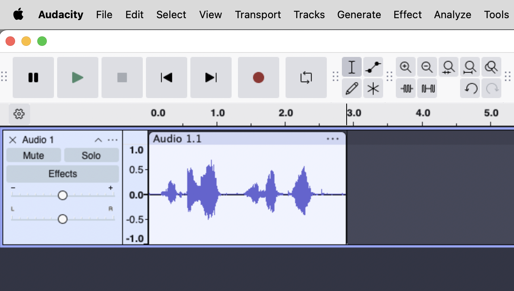

Today you learn three new tools and then return to Project 1, which is due next Wednesday. The tools are the basics of mixing: levels (how loud each track is), panning (where each track sits in the stereo field), and EQ (which frequencies get emphasized or reduced in a sound). Two of them are simple sliders on each track. The third lives in a dialog and works differently.
Take from the lab's gear storage: audio interface, headphones. Plug in and run through the start-of-session steps on the Session Routines card before continuing here.
Your start-of-session routine on the card already syncs your lastname/ folder from the NAS, so your Project 1 file should already be local before you open Audacity here. Quick check:
~/Documents/lastname/project-01/ and confirm lastname-project01.aup3 is present. If it isn't, run the start-of-session NAS sync on the card; the file lives in your lastname/ folder on the NAS under project-01/.lastname-project01.aup3. You should see your Project 1 in progress, with the tracks you've been building.lastname-techniques-scratch.aup3). Both projects can be open at once in different Audacity windows.The three tools today split cleanly into two categories. Knowing which is which is the most important thing in this lab.
A non-destructive tool changes how the audio plays back without changing the audio data itself. Move a slider, hear a difference; move it back, the original is exactly there. The underlying file isn't touched. Most things in modern DAWs (Ableton, Logic, Pro Tools) are non-destructive by default: every EQ, every compressor, every reverb sits as a plugin on the track and can be reshaped at any time, even months later.
A destructive tool changes the audio data permanently. Once you apply it, the samples on disk are different. Undo can revert it during the current session, but once you save and close the project, the change is baked in. There's no going back to "before."
Audacity is mostly an audio editor, and as such, most things in Audacity are destructive. The Effect menu (every effect: fades, reverse, time-stretch, EQ, compression, all of them) modifies your audio in place. That's the point of an audio editor: most audio editors are destructive by design, which goes back to the tape-editing tradition where every edit is a commitment. Cut a section out, splice in a different one, run it through a filter, and the tape is physically different. Audacity inherits that workflow.
The two non-destructive controls in Audacity that we'll use are the track gain slider and the pan slider on the Track Control Panel: those work at playback time, so moving them never changes the underlying audio. Audacity does also have a Realtime Effects feature (the small Effects button on each track that lets you stack non-destructive plugins), but we're not going to use it in this course. The reason is pedagogical: real DAW plugins (Ableton's, Logic's, Pro Tools') are significantly better than the equivalents in any audio editor. So in this module we lean into Audacity for what it does best (committed, destructive editing), and we'll learn the non-destructive plugin workflow properly when we get to Ableton in Module 4.
What this means for today, and for the rest of your time in Audacity:
Two of the tools live as sliders on each track's Track Control Panel on the left side of the track. Take a look at where they are before we start:

The volume of one track relative to the others. The first thing a mixer balances. If a track is too loud, it overwhelms everything else; too quiet, and you don't hear it at all. Most mixing decisions start here.
Setting good levels comes down to two things, in this order:
The black tick on each bar in the diagram marks the highest peak that track has reached. In the healthy mix on the left, every tick lands well below −6 dB, in the green zone; the four tracks are also reasonably close to each other, so no element overwhelms or disappears. In the problem mix on the right, T1 has hit clip and is distorting (its bar fills the green, orange, and red zones because its peak reached all the way to 0); T4 is creeping into the orange hot zone; T2 is comfortably in the green; T3 is also in the green but so quiet (−28 dB) that it'll be hard to hear in the mix. Bars with orange or red show that those tracks have reached into the orange or red zones; an all-green bar means the track's peak stayed safely below −6.
You don't have a single big meter for each track in Audacity (that's a feature of more elaborate DAWs), but you do have the playback meter at the top of the Audacity window, which shows the master output. As your piece plays, watch that meter. If it ever turns red at the right edge, something is clipping. Lower the gain on whichever track is the culprit (often the loudest element), play again, check.
Two passes through your piece. First, solo each track and check its levels on its own. Each track's Track Control Panel has a Solo button (next to Mute). For each track in turn: click Solo on, press play, watch the playback meter at the top of the Audacity window, and check whether anywhere in the track the signal hits the red zone or sits too quietly to hear. Adjust that track's gain slider until peaks land below −6. Click Solo off and move to the next track. This is the gain-staging pass: each track gets checked in isolation so you know nothing is clipping or buried before they all play together.
Second, un-solo everything and play the whole piece. Now the question is balance: with all tracks playing together, can you hear every element at the relative loudness you want? Which moments push the meter close to red? Which tracks disappear when other things are playing? Move the gain sliders to balance them in context, in small adjustments (3 to 6 dB at a time). Keep adjusting until: (1) nothing peaks anywhere in the piece, and (2) every element you intend to be heard can be heard.
Soloing each track to check its levels individually is a habit worth building now. It comes back constantly: any time you're working on one track's level, EQ, or anything else, soloing lets you hear what you're actually doing without the other tracks getting in the way. We'll use it again in the EQ exercise; the Filter Curve EQ Preview button does this for you automatically.
Listen for: small adjustments matter more than large ones. A 3 to 6 dB change is usually enough to bring a track forward or push it back. If you find yourself making 15 dB changes, something else is probably wrong (the source recording may be too loud, or a track is fighting another track's frequency range, which is an EQ problem we'll get to).
The slider next to the playback meter at the top of the Audacity window is the master output: it controls how loud the whole project plays back. Same idea as gain and pan, applied to the project's master output. Useful when individual tracks are well-balanced but the overall mix feels too loud or too quiet on your headphones. Later in the course we'll add tools to the master output that shape the whole mix together (a limiter, for example), but for now leave it alone unless you need a quick overall adjustment.
The position of a track in the stereo field, from full left to full right. Pan is what gives a mix space and width: instead of every sound stacked on top of each other in the center, sounds occupy different points across the stereo image, the way instruments occupy different points on a stage.
Humans localize sound using two cues: interaural time difference (sound from the left arrives at the left ear a fraction of a millisecond before the right) and interaural intensity difference (sound from the left is slightly louder in the left ear because the head shadows the right). Together, these tiny differences let your brain place a sound somewhere in space.
When the same signal goes equally to both speakers (or both sides of a pair of headphones), there's no time or intensity difference between your ears, and the brain reads "this sound is straight ahead, between the speakers." That's a centered sound. When you pan to one side, you're changing the proportion sent to each speaker, which changes the intensity difference at your ears, which moves the sound across the perceived space. Stereo width is built entirely on this trick.
If you imagine looking down at a stage from above, with two speakers in front of you and you sitting in the audience, the space between and around the speakers is the stereo field. Different kinds of sounds tend to live in different parts of it:
Pop and electronic mixing has developed conventions over decades about which kinds of sounds belong where. The conventions aren't rules, but they're worth knowing because they encode useful perceptual realities:
For your Project 1 piece, the rough translation is: the most foundational or lowest-pitched element of a moment usually wants the center; supporting and textural material can spread out. You don't have a kick drum and bass guitar to organize, but you do have your own foundation and supporting roles, even in a musique concrète piece.
Put on headphones (the stereo effect is most obvious there). For each of your tracks, decide what role it plays: is it a foundational element, a supporting one, or a textural one? Then pan accordingly. Try one track at a slight L (around 25%), another at slight R (around 25%), and leave the most foundational one in the center. Press play and listen. Where does each sound seem to come from?
Listen for: the piece now feels wider. Sounds occupy different positions in your headphones rather than all coming from the center. A small pan (20 to 40 percent) is often more effective than a hard pan, because it gives the impression of a real space rather than an artificial split. If something with a lot of low-frequency content suddenly feels lopsided when you pan it, trust that feeling: bring it back to center.
EQ, short for equalization, lets you boost or cut specific frequency ranges in a sound. Think of it as a way to shape the timbre of a sound, the color of the sound, which we covered in lecture: the same pitch played on a flute versus a violin has different timbre because the harmonics above the fundamental are distributed differently. Another name for that distribution of frequency content is the spectrum.
EQ lets you reshape the spectrum: maybe a recording has too much rumble in the low end and you want to reduce it, or a voice sounds dull and you want to brighten the high end. EQ is one of the most-used tools in mixing; it's also one of the easiest to overuse. Destructive in Audacity, like the rest of the Effect menu, which is the reason the Preview habit matters.
This is the first time you're seeing an EQ. Before opening the dialog, here's what one looks like:
The dialog opens with a graph just like this: frequency on the horizontal axis (low frequencies on the left, high on the right), and amplitude in dB on the vertical axis (boost above the center line, cut below it). You draw a curve by clicking on the graph to add control points and dragging them up or down. The curve shows what the EQ will do to each frequency range, exactly as drawn. Where the curve sits at 0 dB, that frequency passes through unchanged. Where it bows up, that frequency gets boosted; where it bows down, that frequency gets cut.
Switch to your scratch project window (lastname-techniques-scratch.aup3). Make sure the scratch window is the active one before you continue.
sustain-long/ all work well. Avoid pure tones for this exercise.Listen for: every EQ change reshapes the character of the sound. Cuts (curves that go below 0) tend to sound natural; boosts (curves that go above 0) tend to be more obvious and easier to overdo. A small change at the right frequency often does more than a large change at the wrong one. The Preview button lets you experiment without consequence; once you Apply, the change is real.
Flatten resets the curve to a flat line at 0 dB. Use this if your curve has gotten messy and you want to start over without closing the dialog. Invert flips the current curve upside down; what you were boosting becomes a cut, and vice versa. Useful when you want to hear "the opposite" of the curve you just drew.
To recap the destructive vs. non-destructive frame in concrete terms, here's what you've now used:
| Tool | How it works | Reversible? |
|---|---|---|
| Track gain slider | Non-destructive (slider applied at playback) | Always; just move the slider back |
| Pan slider | Non-destructive (slider applied at playback) | Always; just move the slider back |
| Master output slider | Non-destructive (applied at playback) | Always; just move the slider back |
| Filter Curve EQ | Destructive (applied to audio data) | Only via Undo, only during the session |
In Module 4, EQ becomes non-destructive too. There it lives as a plugin on each track, real-time, adjustable any time, never baked in until export. The discipline you're building today (Preview before Apply, save versions before destructive moves) is specific to Audacity's tape-tradition workflow. Learning it makes the contrast with Ableton's modern workflow more vivid when we get there.
The rest of the session is yours. Project 1 is due next Wednesday at the end of class.
lastname-project01-v2.aup3). Then if the EQ doesn't work out, you still have the previous version to fall back to.Use File → Save Project As… to save numbered versions (v2, v3, v4) at any point you've made significant changes. Especially before destructive operations. Audacity's undo history doesn't survive closing the project; saved versions do. This is the simplest insurance against losing work.
students/lastname/project-01/).~/Documents/lastname/project-01/ folder to the NAS folder. Don't copy the sources folder; it's already on the NAS. Don't copy the scratch project; it lives only on local.Then continue with the rest of the card's end-of-session routine: eject the NAS, sign out of browser accounts, quit all apps, knobs back to zero, unplug everything, stow the gear back in the lab's gear storage, chair in.
| Control | Where |
|---|---|
| Track gain (volume) | Slider on each track's Track Control Panel, left side |
| Track pan (L/R) | Slider on each track's Track Control Panel, just below gain |
| Master output | Slider next to the playback meter at the top of the Audacity window |
| Effect | Where in Audacity | Key habit |
|---|---|---|
| Filter Curve EQ | Effect → EQ and Filters → Filter Curve EQ | Always click Preview before Apply |